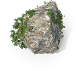

Homam Pooja is considered highly auspicious and is often performed on special occasions, during festivals, or as part of significant life events to invoke divine blessings and remove obstacles. It's believed that the sincere performance of Homam with devotion and adherence to Vedic rituals brings spiritual upliftment and fulfillment of desires.
A Homam (also spelled as Homa) is a sacred Hindu ritual involving fire. It's a powerful ceremony where offerings are made into a consecrated fire while chanting Vedic mantras. Here's a detailed explanation of what happens during a Homam Pooja:
Homam Price
₹ 4,500/-
including pooja samagri and purohit charges.



- Preparation: The ritual begins with the preparation of the sacred fire (Agni). A square-shaped altar (vedi) is constructed using bricks, and sacred items like ghee (clarified butter), grains, herbs, and other offerings are placed nearby.
- Invocation: The ceremony starts with the invocation of various deities and forces of nature through prayers and mantras. The main deity or the purpose of the Homam is also invoked.
- Offerings: The offerings (ahuti) are then made into the fire by the officiating priest or the person conducting the ritual. Ghee, grains, herbs, and other items symbolizing various desires and intentions are offered into the fire.
- Mantras: Throughout the ritual, Vedic mantras are chanted by the priests or participants. These mantras are believed to have immense spiritual and vibrational power, invoking blessings from the divine.
- Symbolism: The fire in the Homam is considered a medium through which the offerings are transmitted to the deities and divine forces. It symbolizes purity and transformation, with the belief that the offerings reach the intended recipients in a purified form.
- Purpose: Homam can be performed for various reasons such as seeking blessings for prosperity, success, health, progeny, or to overcome obstacles and negative influences. Different types of Homams are performed based on the deity worshipped and the specific purpose.
- Conclusion: The ritual concludes with prayers for blessings and well-being for all participants. Prasad (consecrated food) is distributed to everyone present as a blessing from the divine.